Real Herramientas Stock es la herramienta para llevar un único stock por producto, compartido por los dos canales de venta: Mercado Libre y la página web. Si un producto se vende por cualquiera de los dos, se descuenta del mismo número.
Todo lo que entra y sale del depósito se registra como un movimiento. El stock de cada producto es el resultado de esos movimientos, y el historial nunca se borra: siempre se puede ver quién hizo qué y cuándo.
Se entra desde cualquier navegador en real-herramientas-stock.vercel.app, tanto en la computadora como en el celular. En pantallas chicas la tabla de stock se transforma en tarjetas para que sea cómoda de usar con una mano.
La información vive en una planilla de Google Sheets propia ("Real Herramientas Stock – Datos"), con cuatro pestañas: Productos, Movimientos, Stock_inicial y Usuarios.
La sesión dura 30 días en ese dispositivo. Para cerrarla, tocá Salir arriba a la derecha, junto a tu nombre y tu rol.
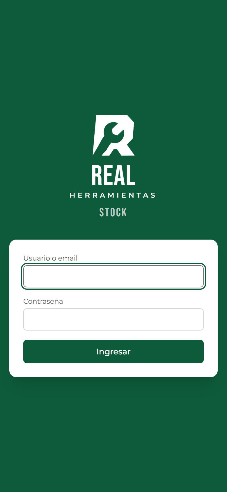
Hay dos roles. El nombre de cada usuario es el que queda registrado en cada movimiento que carga.
| Acción | Admin | Operador |
|---|---|---|
| Ver stock, historial y dashboard | ✔ | ✔ |
| Registrar y anular movimientos | ✔ | ✔ |
| Exportar a Excel | ✔ | ✔ |
| Dejar el stock en negativo | ✔ | — |
| Dar de alta y editar productos | ✔ | — |
| Importar el relevamiento | ✔ | — |
| Gestionar usuarios y contraseñas | ✔ | — |
El operador ve en el menú solo Dashboard y Stock. El admin ve además Importar y Usuarios.
Es la pantalla principal para el trabajo diario: muestra todos los productos con su stock actual.
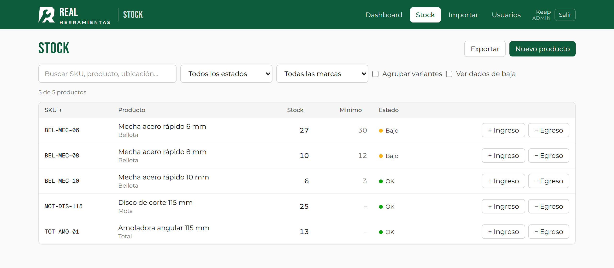
| Columna | Qué muestra |
|---|---|
| SKU | Código único del producto. Tocándolo se abre el detalle con su historial. |
| Producto | Descripción y marca. |
| Stock | Unidades disponibles hoy, sumando los dos canales. |
| Mínimo | Stock mínimo deseado. Un guion significa que no está cargado. |
| Estado | Semáforo discreto (ver abajo). |
| + Ingreso / − Egreso | Botones para registrar un movimiento rápido de ese producto. |
| Estado | Cuándo aparece |
|---|---|
| OK | El stock está por encima del mínimo (o no hay mínimo cargado y hay stock). |
| Bajo | Hay un mínimo cargado y el stock llegó a ese número o menos. Es momento de reponer. |
| Sin stock | El stock es 0 o menos. |
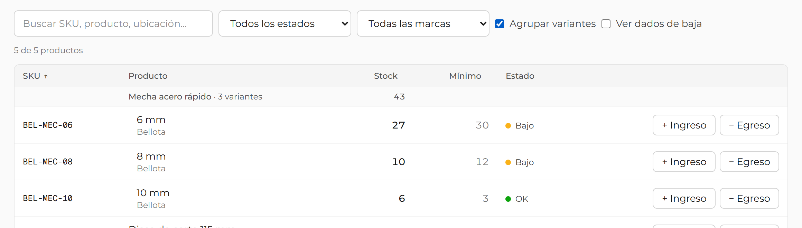
En pantallas chicas cada producto se muestra como una tarjeta con su SKU, descripción, stock, mínimo, estado y los botones + Ingreso y − Egreso.
Tocando el nombre del producto se abre su detalle.
Los filtros y la búsqueda funcionan igual que en la computadora.
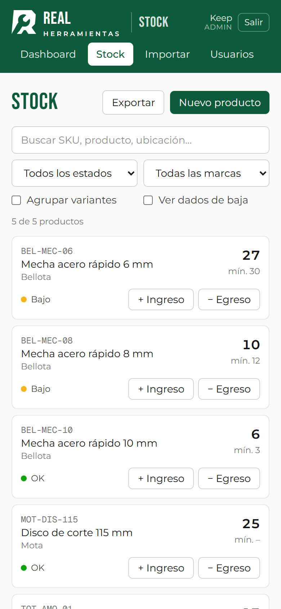
Cada vez que entra o sale mercadería, se registra un movimiento. Es la única forma de cambiar el stock.
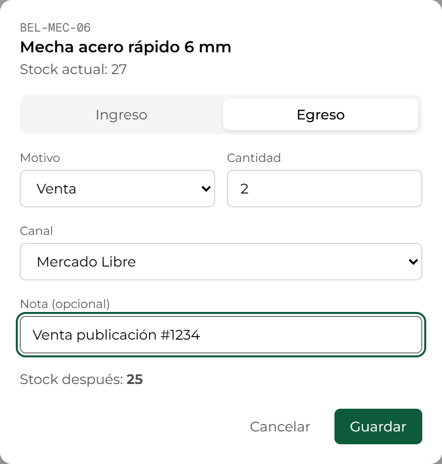
| Tipo | Motivo | Cuándo usarlo |
|---|---|---|
| Ingreso | Compra | Llega mercadería comprada a un proveedor. |
| Reposición | Vuelve stock que estaba en otro lugar o se repone un faltante. | |
| Devolución | Un cliente devuelve un producto. Se puede indicar el canal (opcional). | |
| Ajuste | Un recuento encontró más unidades de las registradas. | |
| Egreso | Venta | Se vendió por Mercado Libre o por la web. El canal es obligatorio. |
| Rotura | Producto dañado que ya no se puede vender. | |
| Pérdida | Faltante que no aparece. | |
| Ajuste | Un recuento encontró menos unidades de las registradas. |
Cada movimiento guarda automáticamente la fecha y hora, el usuario, el stock anterior y el stock resultante.
Antes de guardar, la app vuelve a leer el stock actual. Pide confirmación en dos casos:
Si tocás Guardar dos veces por error (o la conexión del celular reintenta), el movimiento se registra una sola vez.
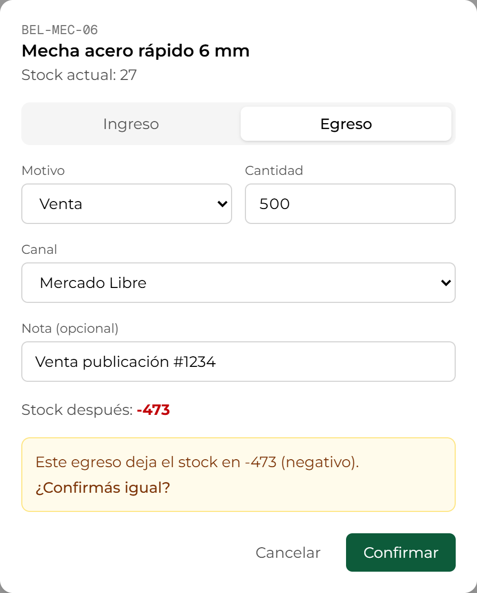
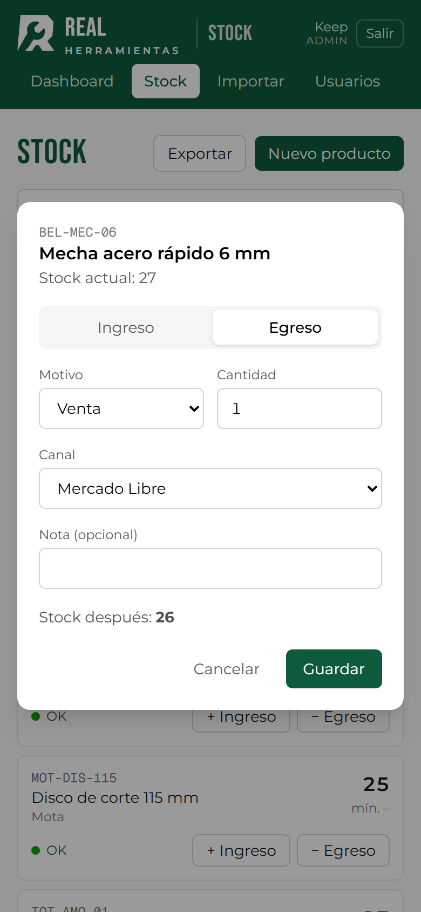
Tocando el SKU de un producto se abre su detalle: stock, mínimo, estado, datos del producto y el historial completo de movimientos, del más nuevo al más viejo.
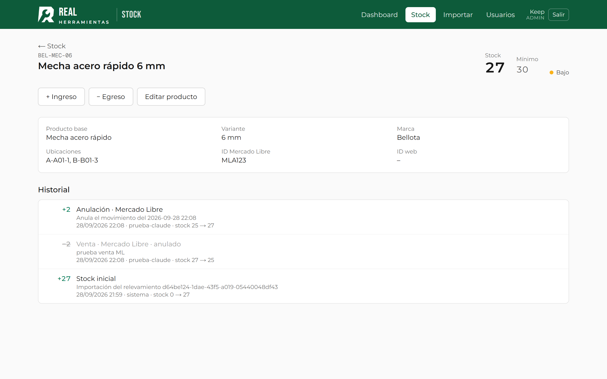
Cada línea del historial muestra la cantidad (en verde los ingresos), el motivo y el canal, la nota, la fecha y hora, quién lo cargó y cómo cambió el stock (por ejemplo, stock 27 → 25).
Los movimientos nunca se borran. Si cargaste algo mal (cantidad, producto o canal equivocado):
En Stock → Nuevo producto. Campos:
| Campo | Detalle |
|---|---|
| SKU | Obligatorio y único. Se guarda en mayúsculas y sin espacios de más, así "bel-mec-06" y "BEL-MEC-06" son el mismo SKU (la app avisa si ya existe). No se puede cambiar después. |
| Descripción | Obligatoria. Es el nombre que se ve en toda la app. |
| Marca | Sugiere las marcas ya cargadas. |
| Producto base y variante | Para agrupar variantes. Ejemplo: producto base "Mecha acero rápido", variante "8 mm". Cada variante tiene su propio SKU y su propio stock. |
| Stock mínimo | Desde cuándo el producto se marca como "Bajo". |
| Stock inicial | Unidades con las que arranca. Queda registrado como movimiento "Stock inicial". |
| Ubicaciones | Dónde está en el depósito, con el formato del relevamiento: Zona-Módulo-Nivel (ej.: A-A01-2). |
| ID Mercado Libre / ID web | Identificador de la publicación en cada canal. Hoy es informativo; va a ser la base para una futura integración automática. |
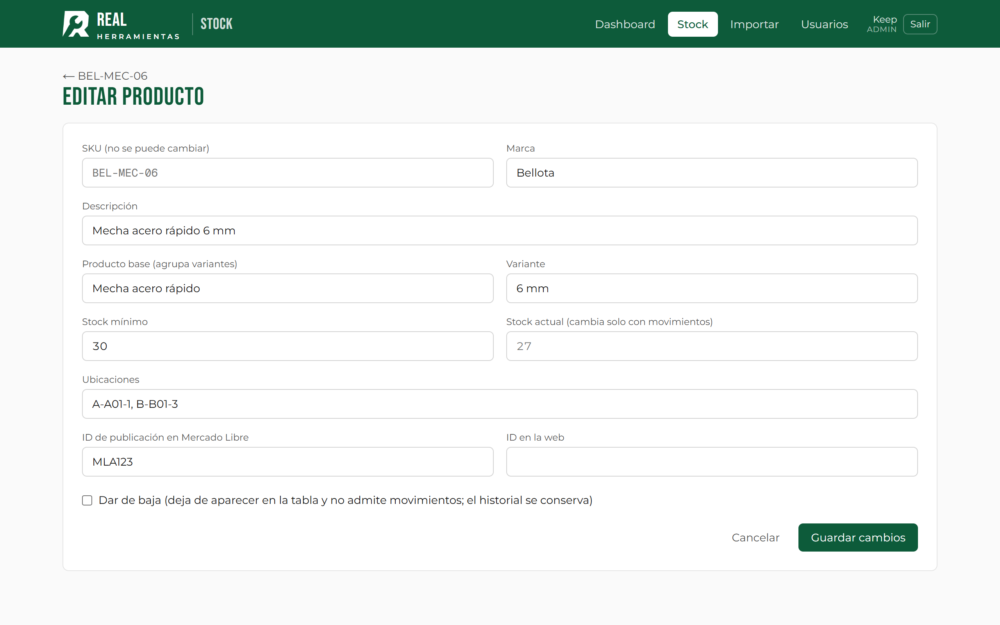
Desde el detalle del producto, Editar producto. Se pueden cambiar todos los datos salvo el SKU y el stock: el stock solo cambia con movimientos, así siempre queda registrado por qué cambió.
En la edición, la opción Dar de baja oculta el producto de la tabla y bloquea nuevos movimientos, pero conserva todo su historial. Se puede ver con el filtro "Ver dados de baja" y reactivar desde la misma pantalla de edición.
Es el resumen del negocio. Las capturas de este capítulo usan datos de ejemplo para mostrar los gráficos completos.
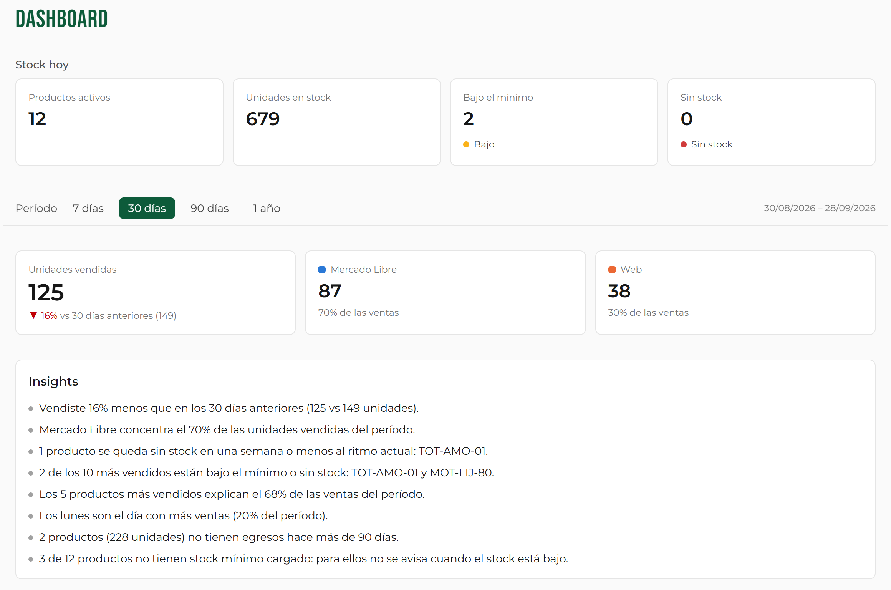
Productos activos, unidades en stock, productos bajo el mínimo y sin stock. No depende del período. Tocando Bajo el mínimo o Sin stock se abre la tabla de stock ya filtrada.
Elegí 7 días, 30 días, 90 días o 1 año. Todo lo que está debajo del selector se calcula para ese período.
Unidades vendidas en el período, con la comparación contra el período anterior de la misma duración (▲ subió, ▼ bajó), y cuánto se vendió por Mercado Libre y por la web , con su porcentaje.
Frases automáticas que resumen lo importante. Solo aparecen cuando los datos las respaldan. Pueden ser:
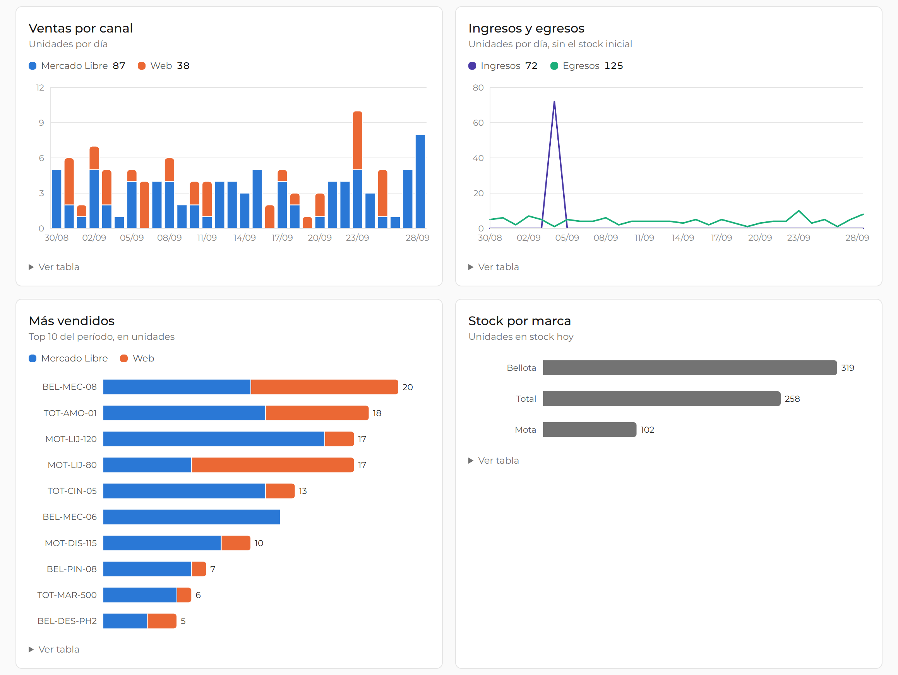
| Gráfico | Qué muestra |
|---|---|
| Ventas por canal | Unidades vendidas en el tiempo, apiladas por canal. Se agrupa por día (7 y 30 días), por semana (90 días) o por mes (1 año). |
| Ingresos y egresos | Todo lo que entró y salió del depósito en el tiempo (sin contar el stock inicial). |
| Más vendidos | Los 10 productos más vendidos del período, divididos por canal, con el total al final de cada barra. |
| Stock por marca | Unidades en stock hoy de cada marca. |
Pasando el mouse (o tocando en el celular) sobre una barra o una línea se ven los valores exactos. Debajo de cada gráfico, Ver tabla muestra los mismos números en una tabla.
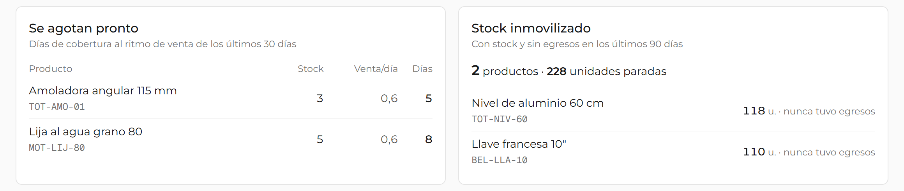
Cuántos días dura el stock de cada producto al ritmo de venta de los últimos 30 días:
días de cobertura = stock actual ÷ unidades vendidas por día
Ejemplo: 3 amoladoras en stock y 0,6 vendidas por día → alcanzan para 5 días. Se listan los productos que se agotan en 30 días o menos, del más urgente al menos urgente. Con pocos días de historial la app avisa que la estimación todavía no es confiable.
Productos con stock que no tuvieron ningún egreso en los últimos 90 días: mercadería parada que ocupa lugar y capital. Se calcula recién cuando hay 90 días de historial (antes, la app indica desde qué fecha va a estar disponible).
Al final del dashboard, los 10 movimientos más recientes de todos los productos, con quién los cargó.
En Stock → Exportar hay dos opciones:
Descarga stock-AAAA-MM-DD.xlsx con una fila por producto: SKU, producto base, variante, marca, descripción, stock, mínimo, estado, ubicaciones, IDs de Mercado Libre y web, si está activo y la fecha de la última actualización. Incluye una hoja Info con la fecha de exportación y los totales.
Elegí las fechas Desde y Hasta (por defecto, los últimos 30 días) y descargá los movimientos de ese período: fecha y hora, usuario, SKU, producto, tipo, motivo, canal, cantidad (negativa en los egresos), stock anterior y resultante, nota y si fue anulado.
Los archivos se abren en Excel o Google Sheets, con el encabezado fijo y filtros listos para usar.
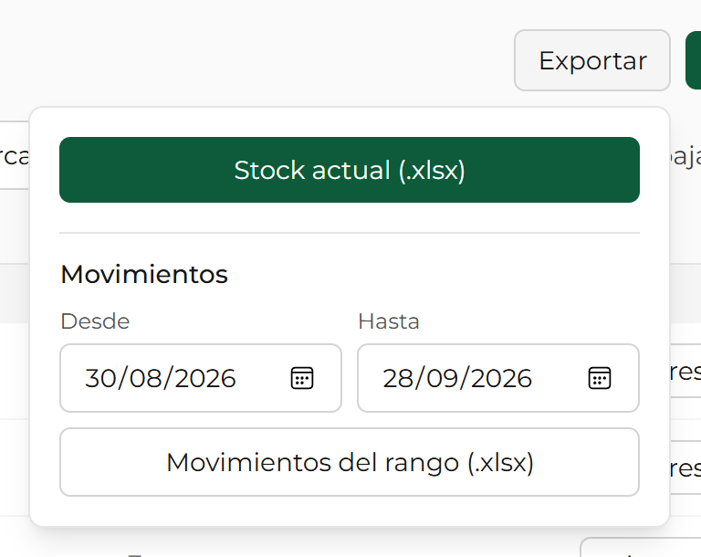
Carga el stock inicial desde el Excel del relevamiento físico del depósito. Se hace una sola vez, con el sistema vacío; después, todo cambio se registra como movimiento.
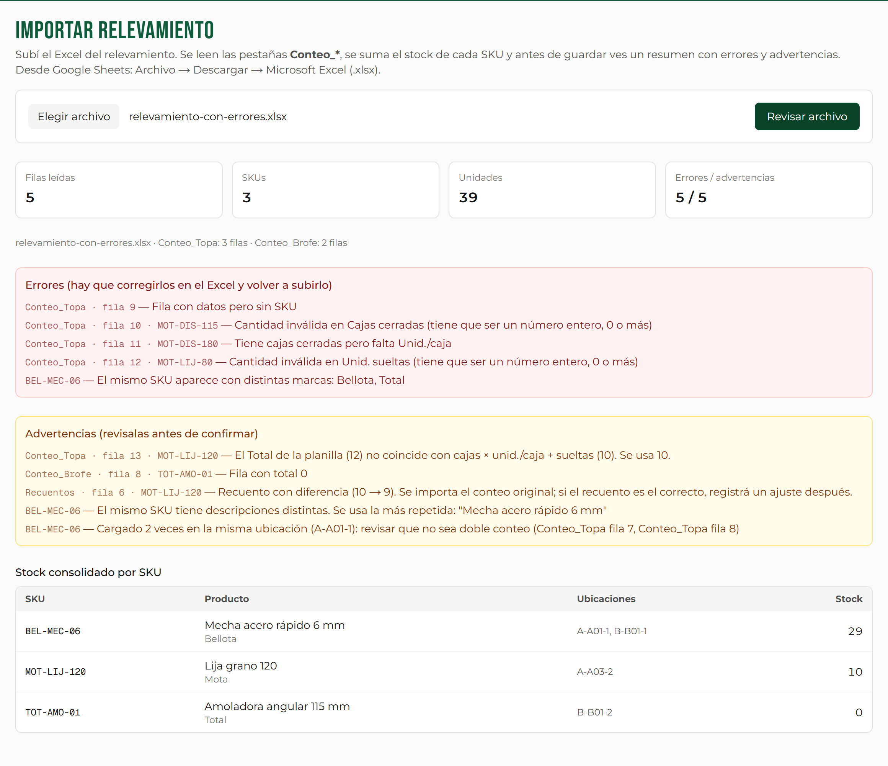
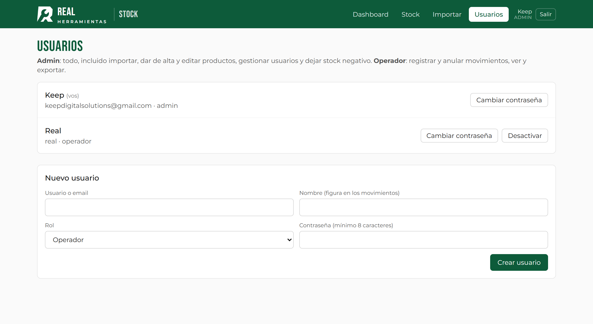
No, en esta versión cada venta se registra a mano. La conexión automática con Mercado Libre y con la web es una mejora a evaluar.
Antes de guardar, la app relee el stock. Si cambió desde que abriste la ventana, te lo muestra y pide confirmación. La app está pensada para que la use una persona a la vez.
Anulá ese movimiento desde el historial del producto y cargá la venta en el producto correcto.
Contá las unidades y registrá un Ajuste (ingreso si hay más, egreso si hay menos) con una nota. Revisá el historial: suele haber una venta sin registrar o un movimiento duplicado.
Son acciones de admin. Si las necesitás, pedile a un admin que las haga o que cambie tu rol.
No: necesita internet para leer y guardar en la planilla. Si la señal es mala y el guardado se reintenta, el movimiento igual se registra una sola vez.
Porque hay pocos días de ventas registradas. Después de algunas semanas de uso la estimación se estabiliza.